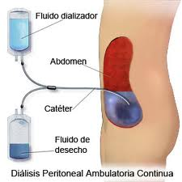

I. Formación de hernias
A. Incidencia y factores etiológicos. La incidencia y la prevalencia de hernias no son fáciles de establecer. Las hernias pueden ser asintomáticas y difíciles de diagnosticar, y pasan inadvertidas en exploraciones sistemáticas. Se ha postulado que hasta el 10 %-20 % de los pacientes en diálisis peritoneal desarrollan hernias en algún momento del tratamiento. Los factores de riesgo potenciales se enumeran en la tabla 25-1 e incluyen volúmenes grandes de solución de diálisis y actividades como las contracciones musculares isométricas o la maniobra de Valsalva. Además, la pérdida de tono de los músculos del abdomen incrementa la tensión de la pared abdominal y predispone a la formación de hernias.
B. Tipos de hernias. Se han descrito numerosos tipos de hernias en pacientes en diálisis peritoneal. Las hernias inguinales indirectas son el resultado del deslizamiento del intestino o del dializado a través del proceso vaginalis, que es permeable porque no se ha cerrado, que es lo que hace en condiciones normales. Es mucho más común en varones. En niños, es frecuente que si un procesus vaginalis permanece permeable (causando una hernia inguinal) suceda también lo mismo en el otro lado, de manera que la reparación debe ser bilateral (v. más adelante).
C. Diagnóstico. Como ya se ha mencionado anteriormente, las hernias pueden no dar ninguna manifestación clínica. Generalmente es preferible que durante la exploración física el paciente se ponga de pie y efectúe una contracción de la pared abdominal, dado que esto incrementa la PIA y hace que la hernia sea más evidente. Es necesario distinguir entre las hernias que aparecen alrededor del catéter peritoneal y las masas debidas a hematomas, seromas o abscesos. La ecografía puede distinguir entre una hernia de apariencia sólida y colecciones de los líquidos antes mencionados. La plenitud escrotal que produce una hernia inguinal indirecta obliga a realizar el diagnóstico diferencial con el hidrocele (líquido o dializado que ha pasado sólo a través del procesus vaginalis permeable) o con una patología intrínseca escrotal o testicular.
Factores de riesgo potenciales para la formación de hernias
Grandes volúmenes de soluciones de diálisis.
Posición sentada
Ejercicios isométricos
Maniobras de Valsalva (p. ej., toser, cortar leña)
Cirugía abdominal reciente
Fugas pericatéter o hematomas
Obesidad
Laxitud
Multiparidad
Defectos anatómicos congénitos
Para la delimitación de la hernia puede ayudar la tomografía computarizada (TC). Se añaden 100 ml de Omnipaque (preparación de iohexol manufacturada por Amersham Health, Amersham, UK) a una bolsa de 2 l de solución de diálisis que posteriormente se perfunde al paciente. Es importante que el paciente permanezca las dos primeras horas en activo y que camine tanto como le sea posible para facilitar el paso del contraste hacia los sacos herniarios. Posteriormente se practica la TC. En el caso de las hernias inguinales es importante ampliar el estudio hacia la zona genital. La TC puede indicar si el edema escrotal se debe al paso de líquido a través de un procesus vaginalis permeable, o desde la pared abdominal anterior (v. más adelante). Este procedimiento ayuda también a distinguir entre las hernias de la pared abdominal anterior y las fugas aisladas de líquido. En otros tipos de hernia, como la hernia umbilical, la práctica de TC no es necesaria porque el diagnóstico suele ser obvio.
Las nuevas experiencias con las imágenes de resonancia magnética (RM) sugieren que ésta puede ser útil en el diagnóstico de las hernias de la pared abdominal y las fugas que aparecen en la zona genital. El dializado se utiliza por sí mismo de contraste, y por lo tanto puede ser de utilidad en pacientes con alergia al contraste radiológico convencional.
D. Tratamiento. Las hernias pequeñas tienen un gran riesgo de incarceración o estrangulación del intestino. Deben repararse quirúrgicamente. Hay que advertir al paciente que si la hernia deja de ser reducible, y sobre todo si se hace dolorosa, debe consultar al médico de forma inmediata. Cualquier paciente con peritonitis debe ser explorado para descartar la existencia de pequeñas hernias estranguladas, ya que éstas pueden permitir la fuga transmural de bacterias y dar lugar a peritonitis. Las hernias grandes también pueden repararse quirúrgicamente, del mismo modo que los cistoceles y los enteroceles. El prolapso uterino (aunque no es realmente una hernia) en ocasiones se puede tratar con pesarios, aunque en última instancia requiere una histerectomía
Tipos de hernias descritas en pacientes en diálisis peritoneal
Ventral
Epigástrica
Pericatéter
Umbilical
Inguinal (directa e indirecta)
Femoral
Hernia de Spigel
Hernia de Richter
Foramen de Morgagni
Cistocele
Enterocele
Después de la reparación quirúrgica de la hernia, debe mantenerse la PIA lo más baja posible para facilitar su cicatrización. Si el paciente presenta una función renal residual significativa (p. ej., 10 ml/min o más), se puede suspender el tratamiento sustitutivo durante un semana y posteriormente reiniciarlo con volúmenes más pequeños (p. ej., 1 l) durante una semana más. Cuando la función renal residual es inferior, el paciente puede estar 48 h sin realizar tratamiento sustitutivo para posteriormente reiniciar el tratamiento con volúmenes más bajos. En estos pacientes debe vigilarse de manera estricta la presencia de síntomas urémicos o hiperpotasiemia. Si se dispone de diálisis peritoneal continua cíclica (DPCC), el paciente puede dializarse en posición de decúbito supino, con lo cual la PIA será inferior. Si la función renal residual es nula, hay que continuar con el tratamiento renal sustitutivo en el postoperatorio inmediato pero con volúmenes inferiores a los habituales.
Otra alternativa es la de pasar al paciente a hemodiálisis durante 2-3 semanas, para permitir una cicatrización de la herida más completa.
Las opciones para los pacientes con hernias recurrentes incluyen la reducción de la actividad física (p. ej., dejar de cortar leña), el aumento de la frecuencia de los intercambios disminuyendo el volumen (p. ej., 5 intercambios de 1,5 l), DPCC con volúmenes bajos (p. ej., 1 l) o intercambios diurnos de corta duración, o bien transferir el paciente a hemodiálisis. Si el paciente está demasiado enfermo o rechaza la cirugía, las hernias se pueden tratar con el soporte mecánico de corsés o bragueros. Hay que advertir a los pacientes sobre los síntomas derivados de la incarceración y la estrangulación de las hernias.

II. Fugas pericatéter y de la pared abdominal
La incidencia de estas complicaciones tampoco se conoce, aunque son menos frecuentes que las hernias. aunque los problemas relacionados con la técnica quirúrgica de la implantación del catéter podrían desempeñar su papel en el progreso de las fugas pericatéter
A. Diagnóstico. Las pérdidas de líquido por la pared abdominal pueden ser de difícil diagnóstico clínico. Puede confundirse con un fracaso de la ultrafiltración, cuando el dializado drenado es inferior al perfundido (v. cap. 23 ). Es común la ganancia de peso, pues el dializado se acumula en los tejidos de la pared abdominal. El diagnóstico debe sospecharse cuando existe disminución del volumen del efluente, aumento de peso, distensión abdominal y ausencia de edemas generalizados o anasarca. Durante el examen físico el paciente debe permanecer en bipedestación, para facilitar la detección de una asimetría abdominal. La propia pared abdominal puede tener aspecto de bolsa, con marcas en la piel producidas por el cinturón, esparadrapos, el tubo del catéter peritoneal, etc. Las fugas pericatéter suelen diagnosticarse por la presencia de humedad (solución de diálisis) en el apósito del orificio de salida. El diagnóstico puede realizarse empleando el TC con contraste, como se ha descrito antes (I.C). En este caso también es importante comprobar que el paciente ha deambulado al menos durante 2 h después de la instilación del contraste para facilitar su desplazamiento hacia la pared abdominal.
B. Tratamiento. Las fugas pericatéter suelen ser una complicación postoperatoria de la implantación del catéter. No basta con tratar de controlarlas con suturas en el lugar de la pérdida, puesto que el líquido se desvía hacia tejidos cercanos en vez de reconducirse a través del catéter. El líquido abdominal del paciente debe drenarse, y suspender la diálisis peritoneal al menos durante 24-48 h. Cuanto más tiempo esté el paciente sin diálisis peritoneal, mayores son las probabilidades de curación de la fuga. En caso necesario, el paciente ha de recibir hemodiálisis durante varios días antes de restaurar la diálisis peritoneal. En la mayoría de los casos las fugas se cierran espontáneamente; de persistir, se debe proceder a la retirada del catéter y a la reinserción en un lugar diferente. A diferencia de las fugas pericatéter, las pérdidas por la pared abdominal pueden ocurrir tanto de forma precoz como tardía. Si las fugas son consecuencia de la disrupción de la integridad de la pared abdominal, el paciente debe ser transferido a programa de diálisis peritoneal nocturna intermitente (DPNI) o a hemodiálisis. En algunas ocasiones, el defecto de la pared abdominal se corrige cuando el paciente se transfiere de manera transitoria al régimen de DPNI, tras la cual se podrá reinstaurar la modalidad de DPCA. En otras ocasiones es necesaria la reparación quirúrgica. La profilaxis antibiótica no suele ser necesaria en los casos de fuga alrededor del catéter, a menos que se observen signos claros de infección. También pueden darse fugas vaginales. Algunas se deben a desviaciones del dializado a través de las trompas de Falopio, en cuyo caso no habrá más remedio que practicar una ligadura de las mismas. Otras complicaciones son por fugas del dializado a través de la disección de las fascias, que requerirá que los pacientes sean transferidos a DPNI o a hemodiálisis.
III. Edema genital
A. Patogénesis. La solución de diálisis puede llegar a la zona genital a través de dos caminos: en primer lugar, por la desviación del dializado a través de un procesus vaginalis permeable hacia la túnica vaginal, produciendo un hidrocele. En este primer trayecto, el líquido de diálisis también puede disecar la túnica vaginal, produciendo directamente un edema de la pared escrotal. El segundo trayecto es a través de un defecto en la pared abdominal, que se relaciona con mucha frecuencia con el catéter. En este caso, el líquido de diálisis se desvía caudalmente a través de la pared.
B. Diagnóstico. Esta complicación suele ser molesta y dolorosa, de manera que el paciente suele acudir de forma precoz a la consulta médica. Debería practicarse una peritoneografía por TC para identificar la ruta responsable del edema de los genitales (p. ej., pared abdominal anterior o procesus vaginalis). Otra alternativa consiste en localizar la fuga del dializado mediante gammagrafia, perfundiendo al paciente la solución de diálisis con albúmina coloidal marcada con 3-5 mCi de tecnecio para realizar el seguimiento con la prueba de imagen.
C. Tratamiento. La diálisis peritoneal debería suspenderse de manera temporal; se recomienda además reposo en cama y elevación del escroto. Dependiendo de las necesidades de diálisis del paciente, una alternativa válida podría ser la realización de DPCC empleando volúmenes pequeños de dializado y manteniendo el paciente en posición supina, con lo que se consigue que no aumente el edema genital. También puede transferirse de manera temporal al paciente a hemodiálisis. Las fugas secundarias a un procesus vaginalis permeable pueden tratarse quirúrgicamente. Si la fuga se produce por la pared abdominal anterior, a veces es útil la recolocación del catéter. Para permitir la correcta cicatrización de la herida debería transferirse de manera temporal al paciente a hemodiálisis. La DPCC en posición supina permite unas PIA más bajas y, por tanto, disminuye el riesgo de recidiva.
IV. Complicaciones respiratorias
A. Hidrotórax. Bajo la influencia de PIA elevadas, el dializado puede desplazarse de la cavidad peritoneal hacia la cavidad pleural, dando lugar a un derrame pleural compuesto por solución de diálisis. Esta complicación se denomina hidrotórax.
1. Incidencia y factores etiológicos. La incidencia real de hidrotórax se desconoce, pues éste puede ser pequeño y asintomático. Se produce con menos frecuencia que las hernias. En el hemidiafragma hay defectos que pueden permitir el paso del dializado. Tales defectos pueden ser congénitos — en cuyo caso el hidrotórax puede presentarse en el primer intercambio de diálisis peritoneal— o adquiridos —con lo que el hidrotórax pasa a ser una complicación tardía. Esta complicación ocurre casi exclusivamente en el lado derecho; probablemente se debe a que el hemidiafragma izquierdo está cubierto en su mayor parte por el corazón y el pericardio.
2. Diagnóstico. Los síntomas del hidrotórax pueden variar desde un derrame pleural asintomático hasta una disnea intensa, y pueden agravarse con la administración de soluciones de diálisis hipertónicas que aumentan la PIA. La toracocentesis puede ser un procedimiento diagnóstico o terapéutico, si es evacuadora, útil para aliviar la sintomatología. El criterio diagnóstico mayor es el hallazgo de líquido pleural con una concentración de glucosa muy alta. Por otra parte, se trata de un trasudado con un número de leucocitos variable. La gammagrafía con tecnecio es un procedimiento también útil para el diagnóstico. Para ello se añade albúmina coloidal marcada con 5 mCi de tecnecio a la bolsa de solución de diálisis y posteriormente se perfunde al paciente. Se realiza la exploración con imágenes de la zona posterior a los 0 min, 10 min, 20 min y 30 min, y de la región anterior a los 30 min. Es muy importante que el paciente deambule durante el período de permanencia para incrementar la PIA y para favorecer el paso del líquido marcado hacia la cavidad pleural. Si en la exploración inicial no se observa paso de líquido de la cavidad abdominal a la pleural, se debe realizar un estudio tardío (a las 2-3 h).
Opciones quirúrgicas para el tratamiento del hidrotórax
Pleurodesis
Talco
Oxitetraciclina
Sangre autóloga
Cola de fibrina-aprotinina
Reparación del hemidiafragma
Sutura del defecto
3. Tratamiento. Si se advierten síntomas respiratorios, la diálisis peritoneal debe interrumpirse inmediatamente. Puede ser necesario realizar una toracocentesis, en cuyo caso el diagnóstico se puede realizar midiendo los valores de glucosa del líquido pleural. El tratamiento definitivo implica la reparación del defecto del hemidiafragma o la realización de una técnica que haga desaparecer el espacio pleural (pleurodesis). En raras ocasiones, la propia solución de diálisis puede actuar como un irritante de la pleura y crear una reacción inflamatoria que produzca la pleurodesis, en cuyo caso la diálisis peritoneal puede reiniciarse en 1-2 semanas. Habitualmente la diálisis peritoneal de baja PIA (volúmenes bajos, posición supina) puede reiniciarse sin recurrencias.
B. Alteraciones de la mecánica respiratoria. La función respiratoria no se modifica con la diálisis peritoneal, a excepción de una disminución de la capacidad funcional residual. Se ha observado una discreta y transitoria disminución de la oxigenación arterial en los inicios de la DPCA. La diálisis peritoneal no empeora los síntomas respiratorios del paciente con enfermedad pulmonar obstructiva. De hecho, el estiramiento tónico del diafragma inducido por el aumento de la PIA puede favorecer la respiración en estos pacientes.
V. Dolor de espalda
A. Patogénesis. La presencia del dializado en la cavidad peritoneal aumenta la PIA y desplaza el centro de gravedad hacia delante, produciendo un estrés lordótico en las vértebras lumbares y en la musculatura paravertebral. En sujetos predispuestos, esta alteración de la mecánica de la columna vertebral puede exacerbar los síntomas de ciática y lumbalgia. La laxitud de los músculos de la pared abdominal anterior incrementa esta sintomatología.
B. Tratamiento. El reposo en cama y la analgesia son pilares fundamentales en el tratamiento de la sintomatología aguda. Algunos pacientes mejoran en cuanto realizan los intercambios de forma más frecuente con volúmenes de dializado inferiores. Cuando sea posible se aconseja realizar DPCC con pequeños volúmenes diurnos, en posición supina; evitando de esta manera el estrés lordótico de la columna lumbar. Lo ideal sería que el paciente realizara ejercicios de fortalecimiento de la musculatura abdominal y espinal; pero no siempre es posible.